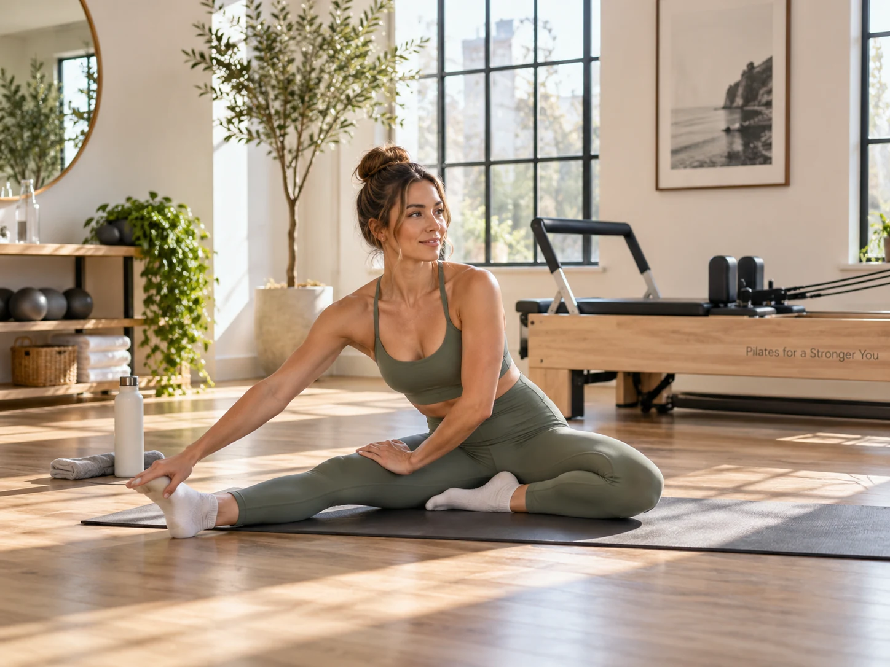
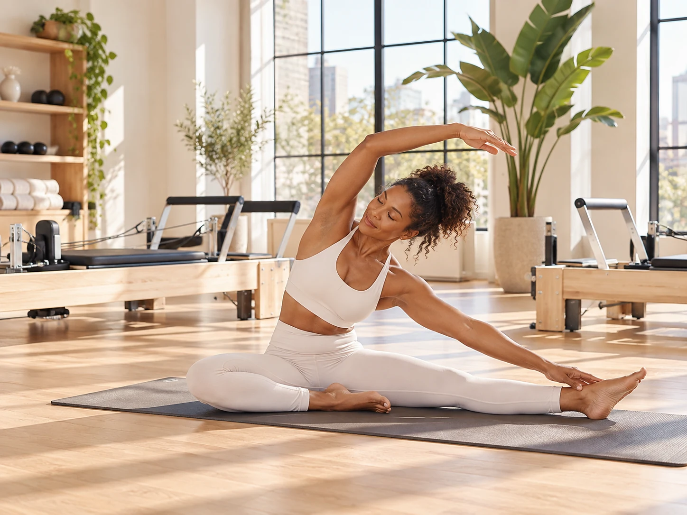

Daily does not have to mean hard daily
A twenty minute mobility focused mat session is very different from an intense reformer class. If you enjoy moving every day, alternate the demand instead of treating all seven days like performance days.
You can have stronger training days, lighter technique days, walking days, and rest days while still keeping a daily movement habit.
Your form tells you when fatigue is winning
If your shoulders keep creeping up, your lower back is taking over, or you cannot control the carriage the way you usually can, fatigue may be changing your movement quality.
Pilates rewards precision. Another class is not automatically useful if you are too tired to do the work well.

Soreness is information, not a score
You do not need to be sore after every class. Mild soreness can happen, especially with new exercises, but constant soreness is not proof that the routine is more effective.
If you are still very sore, choose gentler movement or rest until your normal range of motion and control return.
Sleep and energy matter too
Recovery is not only about muscles. If you are sleeping poorly, unusually irritable, losing motivation, or feeling drained all day, your overall training load may be too high.
A sustainable routine should make you feel more capable over time, not permanently depleted.
A balanced week can still include Pilates most days
You might take three full classes, do two short mat or mobility sessions, walk on another day, and fully rest on one day. That still gives you frequent practice without making every day demanding.
Daily movement can be enjoyable, but daily intensity is not a requirement.
This article is general educational information, not individualized medical advice. If pain, injury, pregnancy, or a health condition affects your movement, speak with a qualified healthcare professional.